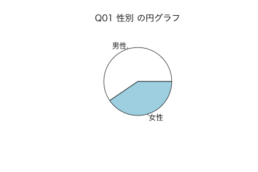
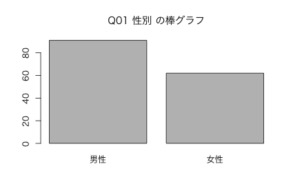
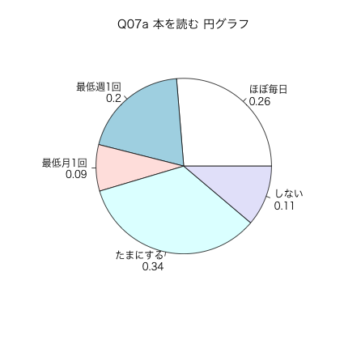
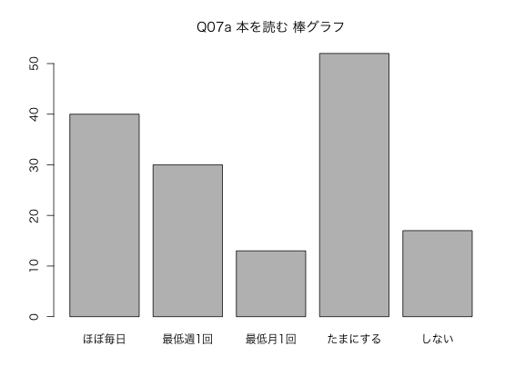
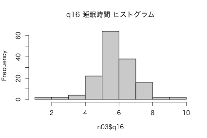
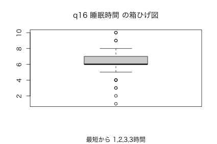

| 変数 1 | 変数 2 | \(\cdots\) | |
|---|---|---|---|
| ケース 1 | 1 | 2 | \(\cdots\) |
| ケース 2 | 1 | 4 | \(\cdots\) |
| ケース 3 | 1 | 2 | \(\cdots\) |
| \(\vdots\) | \(\vdots\) | \(\vdots\) | \(\vdots\) |
| ケース 153 | 1 | 3 | \(\cdots\) |
| ケース 1 | ケース 2 | \(\cdots\) | |
|---|---|---|---|
| 変数 1 | 1 | 1 | \(\cdots\) |
| 変数 2 | 2 | 4 | \(\cdots\) |
| 変数 3 | \(\vdots\) | \(\vdots\) | \(\cdots\) |
| \(\vdots\) | \(\vdots\) | \(\vdots\) | \(\vdots\) |
| q01 | q02 | \(\cdots\) | |
|---|---|---|---|
| 1 | 1 | 2 | \(\cdots\) |
| 2 | 1 | 4 | \(\cdots\) |
| 3 | 1 | 2 | \(\cdots\) |
| \(\vdots\) | \(\vdots\) | \(\vdots\) | \(\vdots\) |
| 153 | 1 | 3 | \(\cdots\) |
| 性別 | 学年 | \(\cdots\) | |
|---|---|---|---|
| 1 | 男性 | 2年 | \(\cdots\) |
| 2 | 男性 | 4年 | \(\cdots\) |
| 3 | 男性 | 2年 | \(\cdots\) |
| \(\vdots\) | \(\vdots\) | \(\vdots\) | \(\vdots\) |
| 153 | 男性 | 3年 | \(\cdots\) |
table(nu03$Q01) prop.table(table(nu03$Q01))
男性 女性
91 62
男性 女性
0.5947712 0.4052288
addmargins(table(nu03$Q01)) addmargins(prop.table(table(nu03$Q01)))
男性 女性 Sum
91 62 153
男性 女性 Sum
0.5947712 0.4052288 1.0000000
par(family = "HiraKakuProN-W3") ## ← Windowsでは実行しない pie(table(nu03$Q01), main = "Q01 性別 の円グラフ")

図1: Q01 性別 の円グラフ
par(family = "HiraKakuProN-W3") ## ← Windowsでは実行しない barplot(table(nu03$Q01), main = "Q01 性別 の棒グラフ")

図2: Q01 性別 の棒グラフ
Hmisc::describe(nu03$Q01)
nu03$Q01 : 性別
n missing distinct
153 0 2
Value 男性 女性
Frequency 91 62
Proportion 0.595 0.405
table(nu03$q06)
1 2 3 4 5 29 38 42 31 13
head(subset(nu03, , c(Q01, Q02, Q07a)))
Q01 Q02 Q07a 1 男性 2年 たまにする 2 男性 4年 ほぼ毎日 3 男性 2年 最低月1回 4 男性 2年 最低週1回 5 女性 2年 ほぼ毎日 6 女性 2年 最低週1回
head(nu03$Q07a) # head() で最初の 6 オブザベーションを表示
[1] たまにする ほぼ毎日 最低月1回 最低週1回 ほぼ毎日 最低週1回 Levels: ほぼ毎日 最低週1回 最低月1回 たまにする しない
table(nu03$Q07a)
ほぼ毎日 最低週1回 最低月1回 たまにする しない
40 30 13 52 17
round(prop.table(table(nu03$Q07a)), 2) # 割合を計算
ほぼ毎日 最低週1回 最低月1回 たまにする しない
0.26 0.20 0.09 0.34 0.11
par(family = "HiraKakuProN-W3") ## ← Windowsでは実行しない pie(table(nu03$Q07a), main = "Q07a 本を読む 円グラフ")

図3: Q07a 本を読む 円グラフ
par(family = "HiraKakuProN-W3") ## ← Windowsでは実行しない barplot(table(nu03$Q07a), main = "Q07a 本を読む 棒グラフ")

図4: Q07a 本を読む 棒グラフ
| Q01 性別 | q16 睡眠時間 | \(\cdots\) | |
|---|---|---|---|
| 1 | 男性 | \(\cdots\) | |
| 2 | 男性 | 8 | \(\cdots\) |
| 3 | 男性 | 4 | \(\cdots\) |
| \(\vdots\) | \(\vdots\) | \(\vdots\) | \(\vdots\) |
| 153 | 男性 | 5 | \(\cdots\) |
summary(nu03$q16)
Min. 1st Qu. Median Mean 3rd Qu. Max. NA's 1.000 6.000 6.000 6.257 7.000 10.000 1
| 統計量 | 英語 | 値 |
|---|---|---|
| 最小値 | Minimum | 1 |
| 第１四分位数 | 1st Quantile | 6.000 |
| 中央値 | Median | 6.000 |
| (算術)平均 | Mean | 6.257 |
| 第３四分位数 | 3rd Quantile | 7.000 |
| 最大値 | Maximum | 10.000 |
| 欠測値 | NA's | 1 |
Hmisc::describe(nu03$q16)
nu03$q16 : 睡眠時間
n missing distinct Info Mean Gmd .05 .10 .25 .50 .75
152 1 10 0.906 6.257 1.293 4.55 5.00 6.00 6.00 7.00
.90 .95
8.00 8.00
lowest : 1 2 3 4 5, highest: 6 7 8 9 10
Value 1 2 3 4 5 6 7 8 9 10
Frequency 1 1 2 4 22 64 38 16 2 2
Proportion 0.007 0.007 0.013 0.026 0.145 0.421 0.250 0.105 0.013 0.013
par(family = "HiraKakuProN-W3") ## ← Windowsでは実行しない hist(nu03$q16, main = "q16 睡眠時間 ヒストグラム")

図5: q16 睡眠時間 ヒストグラム
par(family = "HiraKakuProN-W3") ## ← Windowsでは実行しない boxplot(nu03$q16, main = "q16 睡眠時間 の箱ひげ図", sub = "最短から 1,2,3,3時間")

図6: q16 睡眠時間 の箱ひげ図
nu03$Q01 # データ名$変数名 として値を全て出力
性別 [1] 男性 男性 男性 男性 女性 女性 女性 男性 男性 男性 男性 男性 女性 男性 女性 女性 男性 男性 男性 [20] 男性 男性 女性 女性 男性 男性 男性 男性 男性 男性 男性 男性 男性 男性 男性 女性 男性 男性 男性 [39] 男性 女性 女性 女性 男性 女性 女性 男性 男性 男性 女性 女性 男性 男性 女性 女性 女性 女性 男性 [58] 女性 女性 女性 女性 男性 女性 女性 女性 男性 男性 女性 女性 男性 女性 女性 男性 女性 女性 男性 [77] 男性 男性 男性 女性 女性 男性 男性 男性 女性 男性 女性 男性 女性 女性 女性 女性 男性 男性 女性 [96] 男性 男性 男性 女性 男性 男性 男性 男性 女性 男性 男性 女性 女性 女性 女性 男性 男性 男性 女性 [115] 男性 男性 女性 男性 男性 女性 男性 男性 女性 男性 男性 女性 女性 男性 女性 男性 男性 男性 男性 [134] 男性 男性 男性 女性 男性 男性 女性 男性 男性 女性 女性 男性 男性 女性 女性 男性 男性 女性 男性 [153] 男性 Levels: 男性 女性
table(nu03$Q01) # table() 関数で度数分布を作成
男性 女性 91 62
label(nu03$q21a) summary(nu03$q21a)
[1] "ストレス：頻度" Min. 1st Qu. Median Mean 3rd Qu. Max. 1.000 1.000 2.000 2.366 3.000 5.000
sum()mean()head(nu03$q16) # head() 最初の 6 オブザーべションを表示
睡眠時間 [1] NA 8 4 6 6 6
mean(nu03$q16) # 欠測値 (NA) が含まれていると、計算不可
[1] NA
mean(nu03$q16, na.rm = TRUE) # 欠測値 (NA) を除外 (ReMove) して、平均を計算
[1] 6.256579
head(sort(nu03$q16), 20)
睡眠時間 [1] 1 2 3 3 4 4 4 4 5 5 5 5 5 5 5 5 5 5 5 5
boxplot.stats(sort(nu03$q16))
$stats 睡眠時間 [1] 5 6 6 7 8 $n [1] 152 $conf [1] 5.871845 6.128155 $out 睡眠時間 [1] 1 2 3 3 4 4 4 4 9 9 10 10
summary(subset(nu03, nu03$q16 >= 3, q16))
q16
Min. : 3.00
1st Qu.: 6.00
Median : 6.00
Mean : 6.32
3rd Qu.: 7.00
Max. :10.00
mean(nu03$q16, trim = 0.1, na.rm = TRUE) # 欠測値を除外して計算
[1] 6.270492
range() で min() と max() が表示されるrange(nu03$q16, na.rm = TRUE) # 欠測値を除外して計算
[1] 1 10
IQR()summary(nu03$q16) IQR(nu03$q16, na.rm = TRUE) # 欠測値を除外して計算
Min. 1st Qu. Median Mean 3rd Qu. Max. NA's 1.000 6.000 6.000 6.257 7.000 10.000 1 [1] 1
boxplot()
図7: q16 睡眠時間 の箱ひげ図
var()var(nu03$q16, na.rm = TRUE) # 欠測値を除外して計算
[1] 1.582738
sd()sd(nu03$q16, na.rm = TRUE) # 欠測値を除外して計算
[1] 1.258069
scale()head(nu03$q16) # 最初の 6オブザベーションの睡眠時間
睡眠時間 [1] NA 8 4 6 6 6
head(scale(nu03$q16)) # 最初の 6オブザベーションの睡眠時間の Zスコア
[,1]
[1,] NA
[2,] 1.3857912
[3,] -1.7936844
[4,] -0.2039466
[5,] -0.2039466
[6,] -0.2039466
table()hist()e1071::skewness()e1071::kurtosis()boxplot()median()IQR()range() min() max()summary()sum()mean()var()sd()| [1] | ポール G.ホーエル. 初等統計学 第4版. 培風館, 1981. |